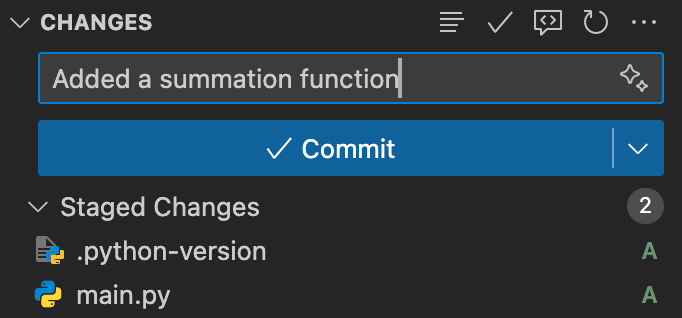

Basic Git Commands You Need to Know in Visual Studio Code
In Visual Studio Code, there is a Built-In feature to manage your git repository. IN the left side of your VS Code window, you will see this symbol:
Click on it to use the graphical interface.
git add
This command tells Git which files you want to include in the next snapshot (commit).
To add all files, click the + symbol in the changes section:

To add a specific file, click the + symbol in the file you want to add:
You will see your added files in the Staged Changes section:

git commit
This command saves the changes you've added, along with a message describing what you did.
You can set your message in the message box. When you are ready, just press the commit button:

git status
This command is not available through VS Code. Yu can see the state of each file with the UI, seeing if the files are Staged. If you see no files in the git section, then you have made no changes to those files.
git push
This command sends your committed changes to a remote repository like GitHub.
To run this, just press the Sync Changes button:
To see these commands in terminal, check the Git Commands.